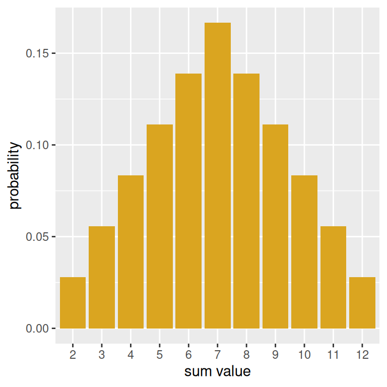

die <- seq(from = 1, to = 6, by = 1)Probability Distributions
Some special distributions and visualizing probabilities
Three useful functions
1. rep(): replicates values in a vector
Sometimes we need to create vectors with repeated values. In these cases, rep() is very useful.
- Arguments
x: the vector or list that is to be repeated. This must be specifiedtimes: the number of times we should repeat the elements ofx. This could be a vector the same length asxdetailing how many times each element is to be repeated, or it could be a single number, in which case the entirexis repeated that many times.each: the default is 1, and if specified, each element ofxis repeatedeachtimes.
2. replicate(): repeat a specific set of tasks a large number of times.
- Arguments
n: the number of times we want to repeat the task. This must be specifiedexpr: the task we want to repeat, usually an expression that is some combinations of functions, for example, maybe we take a sample from a vector, and then sum the sample values.
3. geom_col(): plotting with probability
When plotting probability histograms, we know exactly what the the height of each bar should be. This is as opposed to the bar charts you have seen before (and empirical histograms), where we are just trying to visualize the data that we have collected.
geom_col() creates a bar chart in which the heights represent numbers that can be specified via an aesthetic. In other words, the y variable will appear in our call to aes()!
Example: Rolling a die twice and summing the spots
TipCode along
As you read through the code in this section, keep RStudio open in another window to code along at the console. Keep in mind that we use set.seed() more than once for demonstration purposes only.
Suppose we want to simulate the task of rolling a pair of die and summing the two spots. We can accomplish this task and examine our results using the functions we have just introduced. First, we will make a vector representing a fair, six-sided die.
Obtaining a sum
Method 1 - replicate()
We can use the sample() function to roll the die twice; this will output a vector with two die numbers. Then, we can take the sum of this vector by nesting the call to sample() inside of sum.
set.seed(214)
sum(sample(die, size = 2, replace = TRUE))[1] 7If we would like to repeat this action many times (for instance, in a game of Monopoly, each player has to roll two dice on their turn and sum the spots), the replicate() function will come in handy. In the following line of code, we obtain 10 sums.
replicate(n= 10, expr = sum(sample(die, size = 2, replace = TRUE))) [1] 11 8 8 12 5 7 8 7 10 7Method 2 - rep()
We could also roll the die in advance and then sample from the possible sums: 2 through 12. However, when rolling the two die, there is only one way to get a sum of \(2\) (both dice need to be one), but six ways to get a sum of \(7\). This shows that if we want to represent this action of rolling a pair of dice and taking the sum of spots, we have to use a box in which values will be repeated to reflect their probability. We can use the times argument of the rep() function to make such a box. The number \(2\) is repeated once, the number \(3\) is repeated twice, and so on until the number \(7\) is repeated six times. We can then sample once from this box.
possible_sums <- seq(from = 2, by = 1, to = 12)
correct_sums <- rep(possible_sums,
times = c(1,2, 3, 4, 5, 6, 5, 4, 3, 2, 1))
correct_sums [1] 2 3 3 4 4 4 5 5 5 5 6 6 6 6 6 7 7 7 7 7 7 8 8 8 8
[26] 8 9 9 9 9 10 10 10 11 11 12To get 10 sums as we did before, we just need to sample with ten times with replacement from this new box, correct_sums.
sample(x = correct_sums, size = 10, replace = TRUE) [1] 7 4 8 9 2 7 4 7 6 8Visualizing our results
Making a probability histogram with geom_col()
First, let’s create a vector with the probabilities associated with each possible that can be obtained from rolling two dice. We are taking these probabilities from the drawn probability histogram earlier in the notes.
prob_sums <- c(1,2,3,4,5,6,5,4,3,2,1)/36Now, using the above and the possible_sums vector from before, we can make a data frame with the information about the probability distribution and create a probability histogram, which in turn can be used to make a plot with geom_col().
prob_hist <- data.frame(possible_sums, prob_sums) |>
ggplot(mapping = aes(x = factor(possible_sums),
y = prob_sums)) +
geom_col(fill = "goldenrod") +
labs(x = "sum value",
y = "probability")
prob_hist
The use of factor() is to make sure that for the purposes of the plot, that the sum values are treated categorically.
Performing a simulation and making an empirical histogram
Let’s simulate rolling two die and and computing a sum fifty times Then, we can make a data frame out of our results and find the total amount of rolls, grouped by face. This can be done with the n() summary function– and if we divide by 50, we can get the sample proportions of each sum.
set.seed(214)
results <- replicate(n= 50,
expr = sum(sample(die, size = 2, replace = TRUE)))empirical <- data.frame(results) |>
group_by(results) |>
summarise(props = n()/50)
empirical# A tibble: 11 × 2
results props
<dbl> <dbl>
1 2 0.04
2 3 0.02
3 4 0.06
4 5 0.1
5 6 0.08
6 7 0.24
7 8 0.1
8 9 0.12
9 10 0.14
10 11 0.08
11 12 0.02Now, we can construct an empirical histogram using the empirical data frame.
emp_50 <- empirical |>
ggplot(mapping = aes(x = factor(results),
y = props)) +
geom_col(fill = "blue") +
labs(x = "sum value",
y = "sample proportion")
emp_50
Comparing our results to the truth
You may have wondered why we bothered to save the plot objects. The reason is that we can use a nifty library called patchwork which will help us to more easily visualize multiple plots at once by using mathematical and logical syntax. For instance, using + will put plots side by side.
library(patchwork)
prob_hist + emp_50
With only 50 experiments run, we see that the empirical histogram doesn’t quite match. However, modify the above code by increasing the number of repetitions, and you will see the empirical histogram begin to resemble more closely true probability distribution. This is an example of long-run relative frequency.